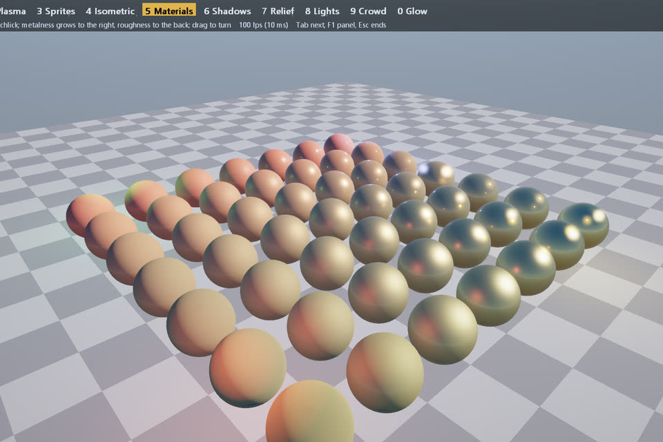
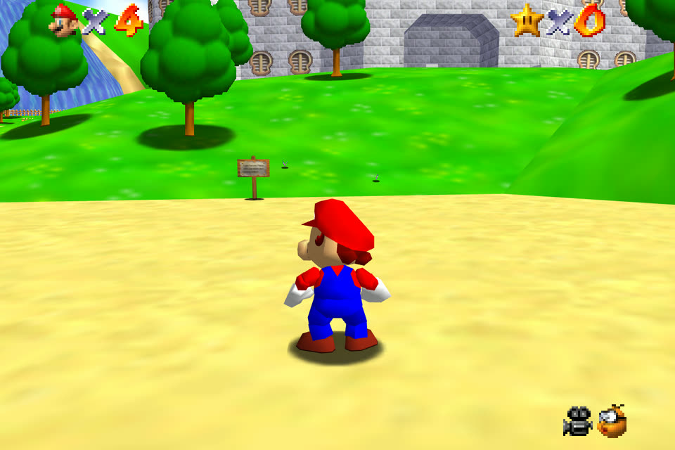
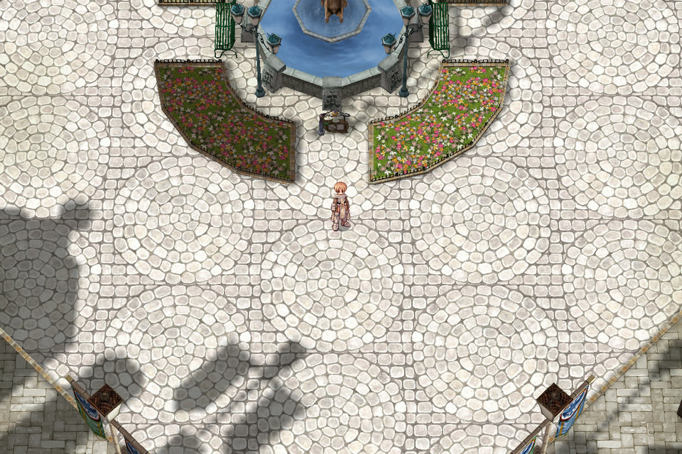
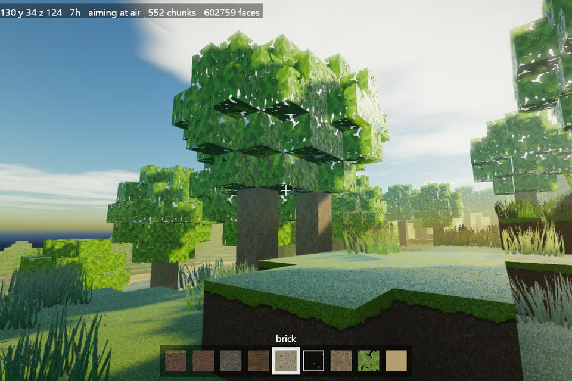
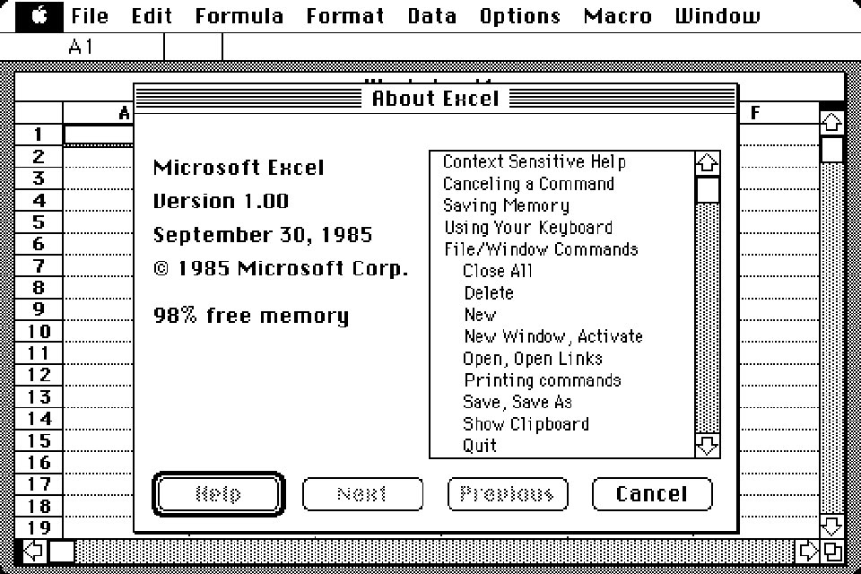
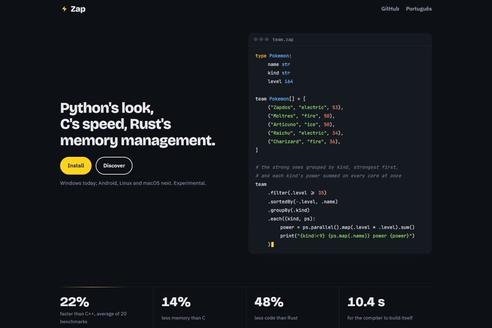

Windows today; Android, Linux and macOS next. Experimental.
type Pokemon:
name str
kind str
level i64
team Pokemon[] = [
("Zapdos", "electric", 53),
("Moltres", "fire", 50),
("Articuno", "ice", 50),
("Raichu", "electric", 34),
("Charizard", "fire", 36),
]
# on every core at once: the strong ones, strongest
# first, grouped by kind, and each kind's power
team
.parallel()
.filter(.level >= 35)
.sortedBy(-.level, .name)
.groupBy(.kind)
.each((kind, ps):
power = ps.map(.level * .level).sum()
print("{kind:<9} {ps.map(.name)} power {power}")
)zap builds, runs, tests, formats and documents. Straight from code to machine code, with no LLVM, C compiler or linker in between: every optimization in reach.Paste this into your coding agent (Claude Code, Codex, Cursor):
Install Zap from https://github.com/zap-kit/zap on this Windows PC: clone it, run `bootstrap/zap-seed.exe run build.zap`, add its build folder to my PATH and run `zap test spec`.
Paste this into your coding agent to learn what is interesting in the language:
Study the Zap language at https://github.com/zap-kit/zap (its README and spec/) and show me, with short examples, what it does differently from C, Rust and Python.
The problems are from The Benchmarks Game, against its fastest published programs, plus our own in its manner. One AI agent tuned every language's programs under the same rules: the languages are compared, not their authors.
Zap against the best of C, C++ and Rust on each program: under 1.00x, Zap wins.
How much code each language needs for the same programs, counted in words and symbols: Zap is 1.00x.

Vulkan and Direct3D 12, from 2D to 3D, written in Zap.

17% less CPU a frame than the C port (sm64ex), frame for frame the same game.

A modern camera that turns, tilts and zooms around the hero, at 986 fps.

An endless world made on every core as you walk, at 403 fps with shadows and water.
The cartridge's ARM code recompiled into Zap: 337 fps, 5.6x the Game Boy Advance.

The 1985 Mac written in Zap, running Excel from its original floppy disks.
The Xbox 360 game rewritten in Zap, at 287 fps.

This site: HTML written inside Zap, its parts as components the way React does.